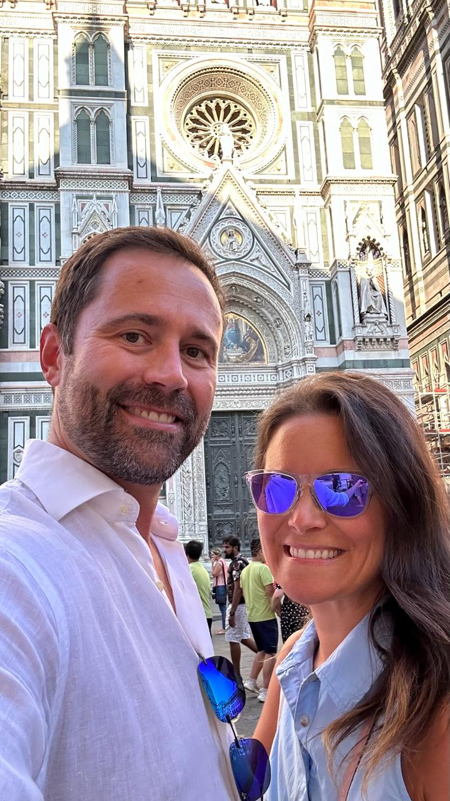

We’re Pamela Tognin & Garry Creath.
Co-Founders of The Ameritalians 🇺🇸🇮🇹
The Ameritalians exists to turn Italy dreams into practical reality. We know the overwhelm, the questions, and the decision fatigue — because we’ve lived it.
Our mission is simple: give you clear, step-by-step guidance so you can travel, explore, or relocate with confidence.
“Authentic and genuinely caring.”
“Open and transparent communication.”
“You helped us think clearly.”

What Makes Us Different
- Practical guidance, not abstract theory
- Real-world experience from people who have done it
- Community-first support through every phase
- Transparent advice built around your real decisions